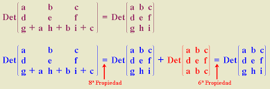

Para calcular el determinante de una matriz, se utilizan diferentes métodos dependiendo del tamaño de la matriz (2x2, 3x3, etc.).
Condición: Para sumar o restar matrices, deben tener el mismo número de filas y columnas.
Procedimiento: Se suman o restan los elementos que están en la misma posición en cada matriz
